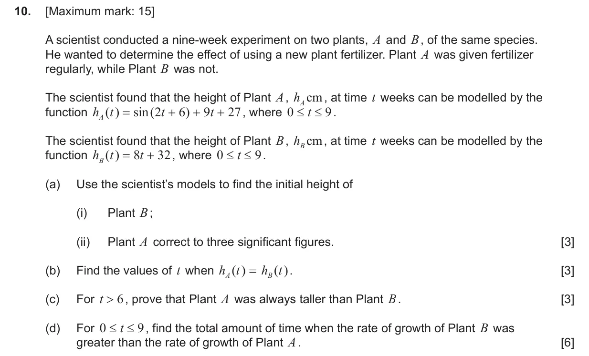
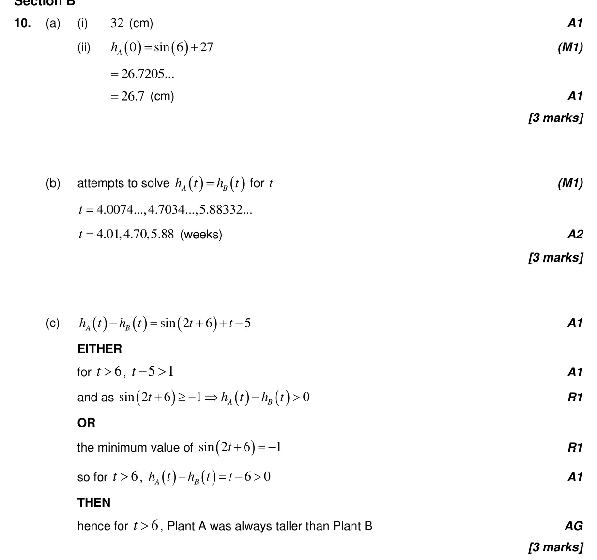
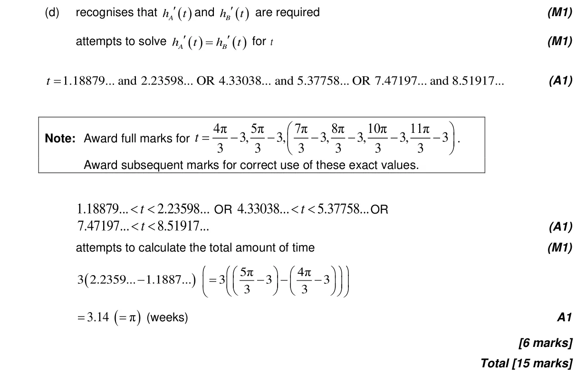

15 marks P2 TZ2 Section B Calculator 2.2 Functions, notation, domain, range and inverse as reflection2.10 Solving equations graphically and analytically5.6 Differentiating polynomials n in Q, chain, product and quotient rules3.8 Solving trigonometric equations5.1 Introduction to calculus1.6 Simple deductive proof3.7 Circular functions: graphs, composites and transformations Question Hide breakdown abcd Markscheme 